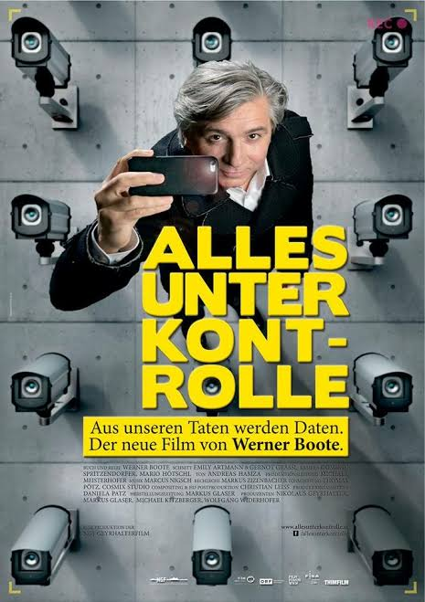

Screenagers (2016)

Ratings: 5.3/10
Runtime: 1 hour 10 minutes
Director: Delaney Ruston
Writer: Delaney Ruston
Award: 1 Win
Stony Brook Film Festival
2016 Winner Special Recognition
July Award
Plot:
| Summaries
Young people spend an average of 6.5 hours a day on cell phones, computers and other devices. That doesn't include the time they use screens for school and homework. 'Screenagers: How Much Screen Time is Healthy?' is a documentary that explores how much screen time is too much. Physician and mother of two Dr. Delaney Ruston became interested in this issue when her preteen started begging for a smart phone. Dr. Ruston saw other parents equally confused on how to balance technology with a young developing mind. She decided to delve deep into the science behind screen time to understand how it affects young people's minds and development. Through personal stories and input from leading researchers, SCREENAGERS sheds light on the impact this screen time is having on kids. The documentary explores how learning, playing and socializing online affects teens' developing attention span, fragile self-esteem and moral instincts. SCREENAGERS examines the real risks of failing in school, social isolation and digital addiction. Ultimately, the film explores solutions to handle screen time and provides parents with tools to help young people develop self-control and find balance in their digital lives.
Release date January 25, 2016
Country of origin United State
Language English
Also known as Screengers: Growing Up in the Digital Age
Production company MyDOC Productions
Everything's Under Control (2015)
Ratings: 7.2/10
Runtime: 1 hour 33 minutes
Director: Werner Boote
Writer: Werner Boote
Award: 1 Nomination
Austrian Film Award, AT
2017 Nominee Austrian Film Award
Best Sound Editing (Beste Tongestaltung)
Plot
| Summaries
Facebook, Amazon and Google provide us with around the clock access to the convenient digital world! Surveillance cameras on the streets take care of our security. But who actually collects our fingerprints, iris scans, online shopping preferences, and social media postings? Don't we care about our privacy anymore? In his unique charming and curious way filmmaker Werner Boote travels around the world to explore the "brave new world" of total control. EVERYTHING UNDER CONTROL by Werner Boote (Plastic Planet, Population Boom) - an evocative film about the self-evidence of surveillance. In cinemas 25th of December 2015.
Release date December 25, 2015
Country of origin Austria
Language German • English
Also known as Everything's Under Control
Production company Nikolaus Geyrhalter Filmproduktion